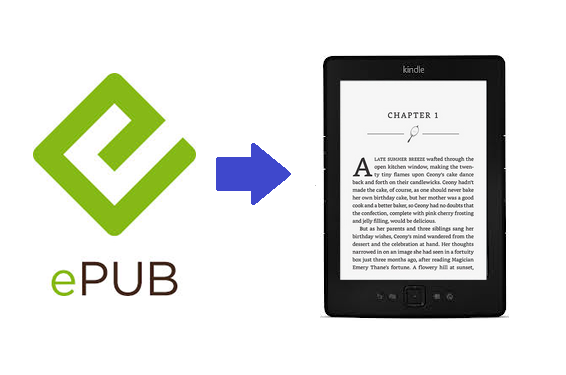

EPUB is a digital file format used to publish electronic books and other digital content. It is designed to work across many types of devices, including smartphones, tablets, eReaders, and desktop computers. The format is reflowable, meaning that the text can automatically adjust to different screen sizes and user settings, such as font size or brightness (W3C, 2025). EPUB files have the .epub extension and are packaged as compressed ZIP files containing HTML content, styles, and metadata. This makes them easy for compatible reading systems to display correctly.
An EPUB file is made up of several key parts that work together. Inside the file, there are HTML documents with the actual content, style sheets to control how everything looks, and XML files that help structure and describe the book. According to the W3C, “the actual content of an EPUB publication... is built on the Open Web Platform and comes in two flavors: XHTML and SVG” (W3C, 2025). These content documents can also include media like images, audio, video, and scripts to enhance the reading experience.
Because EPUB is an open standard, it is not tied to any one company. This makes it more accessible to both creators and readers. Self-published authors, educators, and developers can all use EPUB without needing a special license. It is widely supported by free and paid apps, and it is the preferred format for many online libraries and bookstores. Overall, EPUB is a flexible and powerful standard for digital publishing that keeps improving over time.